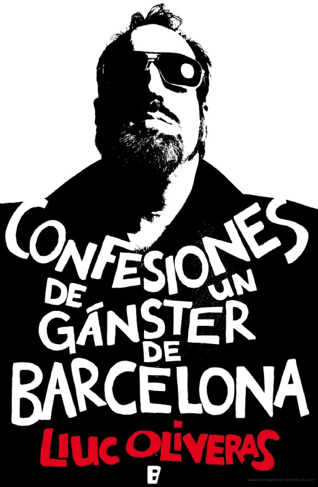

"Mi nombre es Miguel Çngel Soto Martín, pero casi todos me conocen como Soto o el Millonario. Por mi corpulencia y porque siempre le he echado un par de cojones a la vida, muchos se han referido a mí como el Verraco, pero si algo tengo claro, es que despues de todo, sólo me queda una única reflexión a tener en cuenta: dar gracias cada día por seguir vivo..."
Confesiones de un gánster de Barcelona es un retrato excepcional de la vida delictiva de la Ciudad Condal de los años setenta y ochenta, y del sistema penitenciario en la epoca de la Transición, el testimonio sorprendente, por su insolencia, frescura y autenticidad, de Miguel Çngel Soto Martín, álter ego de Dani el Rojo, mítico delincuente de la Barcelona underground del momento.
Una extraordinaria representación, de primera mano, del funcionamiento de los cuerpos de seguridad de los locales nocturnos, de los trapicheos, de las bandas, de las timbas ilegales, de la planificación y ejecución de atracos a bancos y joyerías y, por último, de la vida carcelaria en la Modelo de principios de los años ochenta.